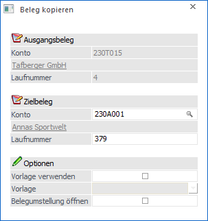
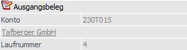
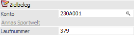
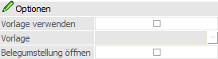
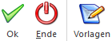

Im Menüpunkt…
1 WinLine FAKT
1 Erfassen
1 Belegverwaltung
1 Belegmanagement bzw. Belege
… oder direkt in der Belegbearbeitung via "Belege - Matchcode", kann mit Hilfe des Buttons "Belegkopie" jeder Beleg auf ein beliebiges Personenkonto kopiert werden.
Hinweis
Die Belege werden 1 zu 1 kopiert, d.h. im Zielbeleg werden die gleichen Konditionen, die gleichen Preise, der gleiche Vertreter, etc. verwendet wie im Ausgangsbeleg und müssen daher ggf. überarbeitet werden. Automatisch angepasst werden folgende Daten:
ü Der Freigabestatus wird automatisch lt. Freigabedefinition gesetzt.
ü Die Belegart und die darin vorgenommenen Einstellungen (Buchungsart, Endmakro, usw.) werden vom Zielkunden genommen, ebenso die Versandarten und dabei hinterlegten Makros.

Ausgangsbeleg

In diesem Bereich werden die Daten des Ausgangsbeleg (Konto und Laufnummer) angezeigt.
Zielbeleg

Ø Konto
An dieser Stelle erfolgt die Eingabe des Kontos, auf welches der Beleg kopiert werden soll.
Ø Laufnummer
Nach Bestätigung der Kontonummer wird die nächste freie Laufnummer des Kunden / Lieferanten vorgeschlagen. Diese Nummer kann aber manuell übersteuert werden.
Optionen

Ø Vorlage verwenden
Wird die Option "Vorlage verwenden" aktiviert, so werden die in der Belegvorlage (siehe Feld "Vorlage") angegebenen Felder nicht aus dem Basisbeleg übernommen, sondern entsprechend der Definition der Belegvorlage geändert.
Ø Vorlage
Wenn die Option "Vorlage verwenden" aktiviert wurde, so kann an dieser Stelle eine Belegvorlage mit Hilfe einer Auswahlliste gewählt werden.
Ø Belegumstellung öffnen
Wird diese Checkbox aktiviert, so wird der Beleg kopiert und gleichzeitig die Belegumstellung (Schritt 2) geöffnet.
Mittels der Belegumstellung kann mit dem soeben erstellten Beleg weiter verfahren werden; z.B. um einzelne Felder auf aktuelle Werte umstellen, wie eventuell das Datum auf den heutigen Tag zu setzen, usw. (nähere Information entnehmen Sie bitte dem WinLine FAKT Handbuch, Kapitel "Belegumstellung").
Buttons

Ø Ok
Durch Anwahl des Buttons "Ok" bzw. der Taste F5 wird der Kopiervorgang gestartet.
Ø Ende
Mittels des Buttons "Ende!" bzw. der Taste ESC wird das Fenster geschlossen und kein Kopie erzeugt.
Ø Vorlagen
Über diesen Button kann das Fenster der Belegvorlagen geöffnet werden um eventuell neue Belegvorlagen zu erstellen oder bestehende zu verändern (nähere Information entnehmen Sie bitte dem WinLine FAKT Handbuch, Kapitel "Belegvorlagen").